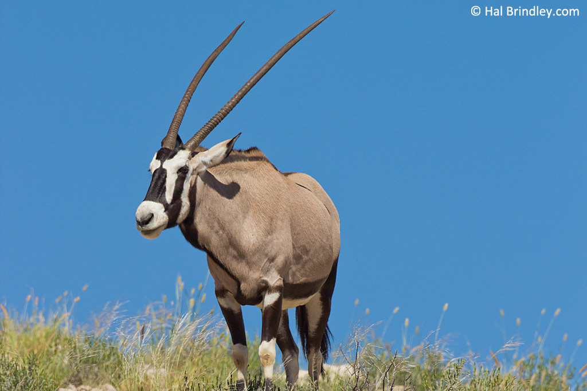

Gemsbok
The Gemsbok (Oryx gazella) is the common name given to the largest and most well known of the 3 species of Oryx. Due to their horns being so lethal, Gemsbok have also been called the ‘Sabre Antelope’. Its name is actually derived from the German word for a male chamois, although they are not related. Gemsbok are distributed around deserts, scrublands and brushlands in South Western Africa.
You will find the gemsboks just beyond panda canyon.
watch the video below: